Melt Fluidity
Ceramic glazes melt and flow according to their chemistry, particle size and mineralogy. Observing and measuring the nature and amount of flow is important in understanding them.
Key phrases linking here: melt fluidity, melt-flow, melt flow, the melt - Learn more
Details
Glazes become fluid when they melt, they are molten. The fluidity (or viscosity) of this melt needs to be considered, especially when troubleshooting problems. While different fired glazes may appear to have melted a similar amount (even on a vertical surface), one may be radically more melt-fluid than another (this becomes evident in a fluidity tester or when the glaze is applied thicker). While it might seem logical that a matte glaze has a fairly stiff (viscous) melt, it might actually be highly melt-fluid and runny (because the matteness is usually a product of crystallization on the surface during cooling or phase separation within the glass). How fluid can the melt of a glaze be? Almost like water in some cases (e.g. in highly fluxed glazes with almost no Al2O3 can run off a tile if it is tiled only a few millimetres). Melt flow testers are a good way to get a true picture of how fluid a glaze melt really is. In a well-designed melt flow tester, a functional glaze will travel about halfway down the runway (while reactive glazes will run off the end). Testing melt fluidity using balls and cone shapes also provides valuable information.
Glazes do not simply melt, they soften. In non-fritted glazes, certain mineral particles in the powder mix melt alone (or multiple types interact to melt) before the others, these are the fluxes and they form what we call "the melt". As temperature increases, they dissolve refractory particles around them (e.g. quartz/silica, clay). The size of the refractory particles and the time available determine the completeness of the melting. Potters normally fire slow enough that it is assumed that all particles have gone into solution if a glaze appears well melted. But in industry, where firings go from cold-to-cold in a very short time, attention must be given to this. For this reason, the use of frits and ball milling to reduce silica particle sizes is standard practice.
Glaze melt fluidity relates closely to a variety of problems like pinholing, crawling, gloss, blistering, crazing, and even leaching. Logically, glazes for vertical surfaces will be more viscous than tile glazes, for example (which are applied to horizontal surfaces). Molten glaze viscosity can be understood in terms of molecular silicate chains (which also link across to other chains). The chemistry of the melt (and the degree to which materials have released their oxides to it) determines the rigidity of the structure and therefore the viscosity of the melt. Glazes high in powerful fluxes (like boron, lithium, sodium) melt and run more. In functional ware, for example, it is desirable to have enough melt to bring into solution all the material particles and produce a fired surface that has good gloss. However if too much flux is present the fired glaze is not as hard, it can have higher thermal expansion (if it contains high KNaO), may be more prone to blistering, and is more likely to leach. Thus it is best to tune the ratio of fluxes to SiO2 and Al2O3 such that the melt has the right degree of movement and no more. Even special-purpose reactive or matte glazes need to be tuned. In the case of the former, a compromise is needed between the high fluidity needed to produce the visual effect and a more stable and harder stiffer melt. For matte glazes, a less fluid type that relies more on high MgO rather than high Al2O3 only will have less cutlery marking of the fired glass.
Blistering often occurs in glazes of high melt fluidity. This might appear illogical since it would seem that such melts would more readily pass gases of decomposition from the body. However, the problem often happens because these glazes begin to melt (and seal the body surface) at much lower temperatures than one might think. Then they just keep percolating the escaping gases as the kiln is soaked and even continue after the kiln is shut off. Fast-dropping temperatures can freeze these blisters into the glass at an even lower temperature than they first melted at. Employing less gassing materials, applying a denser laydown of glaze, a flux system that melts later, or scheduling fire-down of the kiln will help.
The Potter's dictionary has a very good discussion with diagrams of this under the term 'viscosity'.
Related Information
Downloadable 3D model for melt flow tester block mold
Available on the Downloads page

This picture has its own page with more detail, click here to see it.
This is a 3D rendering of our melt fluidity tester. We have promoted this device for many years as an effective way to compare fired glaze properties (e.g. melt fluidity, surface tension, bubble retention, crystal growth, transparency, melting range, etc). Open the 3MF file in your slicer, move all pieces off the print bed and unselect them all. Then, print each part by moving it onto the bed and using place-on-face to orient it right. Print the funnel wide-side down with brim. Insert the natch clips and embeds into the holes, pour in the plaster, let it set and finally remove the PLA with a heat gun. You now have a working mold to make slip cast testers. Glue the natches and spacers into the embeds, strap the mold together, glue in the pour spout with slip and finish by filling the mold with slip. If the mold is dry, 10-15 minutes should be enough to get adequate thickness (don't make them too heavy). With 0.8mm thick walls, this drawing 3D prints quickly and is easy to remove when the plaster has set (using a heat gun). The halves interlock using natches (requiring our embeds and related parts). The mold halves can also be lined up by the outer edges before clamping them together (thus not requiring natches).
Comparing glaze melt fluidity balls with their chemistries
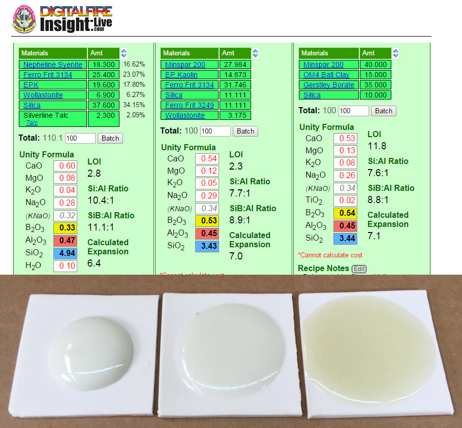
This picture has its own page with more detail, click here to see it.
Ten-gram GBMF test balls of these three glazes were fired to cone 6 on porcelain tiles. Notice the difference in the degree of melt? Why? You could just say glaze 2 has more frit and feldspar. There is a better explanation, compare these yellow and blue numbers: Glaze 2 and 3 have much more B2O3 (boron, the key flux for cone 6 glazes) and lower SiO2 (silica, it is refractory). But notice that glaze 2 and 3 have the same chemistry, but 3 is melting more? Why? Because of the mineralogy of Gerstley Borate. It release its boron earlier in the firing, getting the melting started sooner. Notice it also stains the glaze amber, it is not as clean as the frit. Notice the calculated thermal expansions: The greater melting of #2 and #3 comes at a cost, their thermal expansions are considerably higher, so they will be more likely to craze. Which of these is the best for functional ware? #1, G2926B (left). Its high SiO2 and enough-but-not-too-much B2O3 make it more durable. And it runs less during firing. And does not craze.
Melt fluidity differences are not obvious by just comparing glazed ware
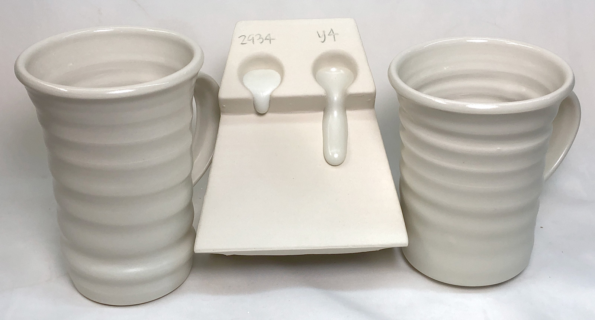
This picture has its own page with more detail, click here to see it.
These two Plainsman M370 test mugs were fired at cone 6, the left one with G2934 matte glaze, the right one with G2934Y4 matte. They look and feel identical in the hand. The two glazes have the same chemistry. But they employ different materials to source that chemistry. The secret of of the matteness is high MgO (magnesia content). In the glaze on the left MgO is sourced by dolomite, a lot of it. The glaze on the right sources it from a special frit, Ferro 3249. The impact of this difference is visible in the melt fluidity tester, the fritted one is melting and flowing much better. On other clays, especially stonewares, the G2934 can have a dry surface that cutlery marks. Thicker applications make it worse. But the Y version exhibits no such issues. Its mattness, durability, cleanability and hardness are so good that it is being used in floor tile.
Frits vs. raw materials in glazes: It is not just about the chemistry
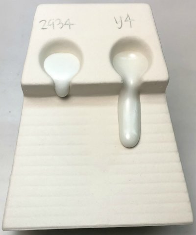
This picture has its own page with more detail, click here to see it.
The difference between sourcing fluxing oxides from frits vs. raw materials is significant to say the least. The oxides MgO and CaO normally come from natural mineral that melt high. But common frits that source them soften low. The chemistry in the two cone 6 glazes (compared on this melt flow tester) are the same. But G2934Y4 sources the KNaO from Ferro Frit 3110 instead of feldspar and alot of the MgO from Ferro Frit 3249 instead of talc. Even though Y4 has 10% calcined alumina it still flows much better! Alumina, as a source of Al2O3, is a super refractory material (compared to kaolin, the normal source), the glaze should flow less - but the frits overcome even that to create this amazing fluidity in a matte glaze. The lesson: All glazes have a chemistry, but that cannot be taken in isolation from the materials that source it. Glaze chemistry is a relative, not absolute science.
Comparing the melt fluidity of two shipments of Custer Feldspar
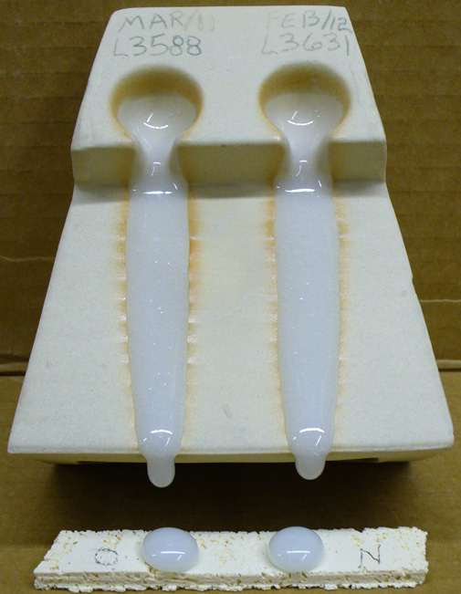
This picture has its own page with more detail, click here to see it.
A GLFL test for melt-flow to compare Custer Feldspar from Feb/2012 (right) with Mar/2011 (fired at cone 6). Custer Feldspar does not melt like this by itself at cone 10. It was mixed 80:20 Feldspar:Ferro Frit 3134. This test demonstrates that the material has been very consistent between these two shipments.
A pottery glaze that can eat through a firebrick!

This picture has its own page with more detail, click here to see it.
The melt fluidity tester was fired at cone 6. The glaze on the left is G2826A2, the 50:30:20 historically popular Gerstley Borate base recipe used for reactive and transparent glazes. The B2O3 in that glaze was 3x the normal amount in cone 6 glazes, making it so melt fluid it can eat through a firebrick!
The glaze on the right is G2926A3, an adjusted version that cuts the B2O3 level and adds SiO2 (from silica and nepheline). The result is more sane, although still very melt-fluid glaze. This is also a lesson in the chemistry that produces boron-blue: High B2O3 is not the key; my adjustment lowers it significantly. CaO/MgO is also lower, so that is not the key. The SiO2 appears to be the enabler here; it is much higher (from 2.6 to 3.48, a hugh increase). And, I am using 325 mesh silica, so it dissolves in the melt better, delivering even more SiO2. Boron blue thus seems to thrive on enough SiO2 coupled with high B2O3 and low Al2O3 with some MgO/CaO.
Testing two brands of tin oxide in a melt flow tester
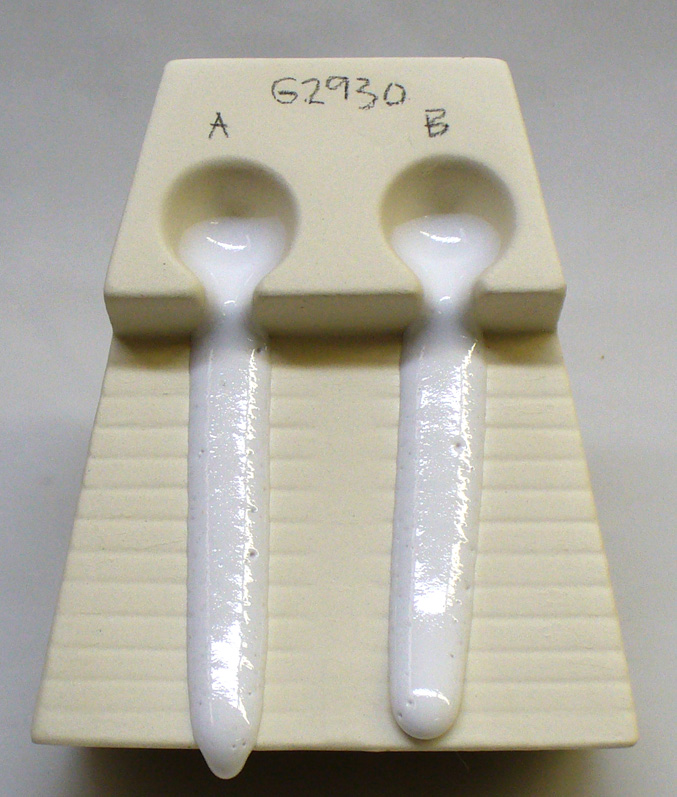
This picture has its own page with more detail, click here to see it.
This melt fluidity tester compares two different tin oxides in a cone 6 transparent glaze (G2926B). Opacifiers affect not just opacity in glazes, but also liquid properties of the melt. The length, surface character, opacity and color of these flows provide an excellent indication of how similar the two materials are. This is the GLFL test.
Testing a new brand of dolomite
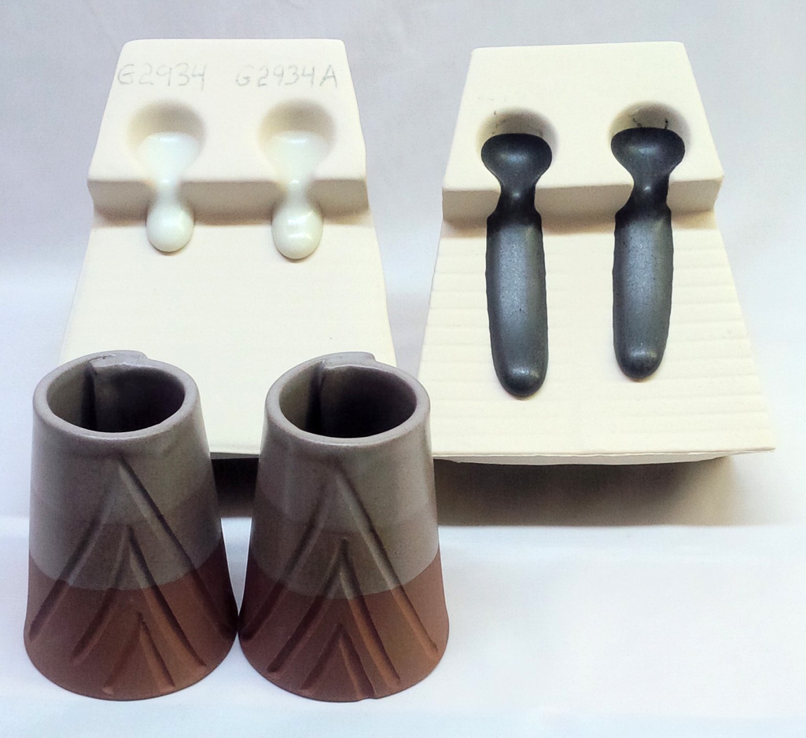
This picture has its own page with more detail, click here to see it.
Dolomite is a key material for glazes, especially mattes. We were forced to adopt a new brand and needed confidence it was equivalent. Three tests were done to compare the old long-time-use material (IMASCO Sirdar) with a new one (LHoist Dolowhite). The first melt flow tester compares them in a very high dolomite cone 6 recipe formulated for this purpose; the new material runs just slightly more. The second tester is uses the G2934 cone 6 magnesia matte recipe with 5% black stain; the new material runs a little less here. The third test is the high dolomite glaze on a dark burning clay to see the translucency and compare the surface character. They are very close. These three gave us the confidence to proceed.
This flow tester indicates copper is not fluxing or bubbling this glaze
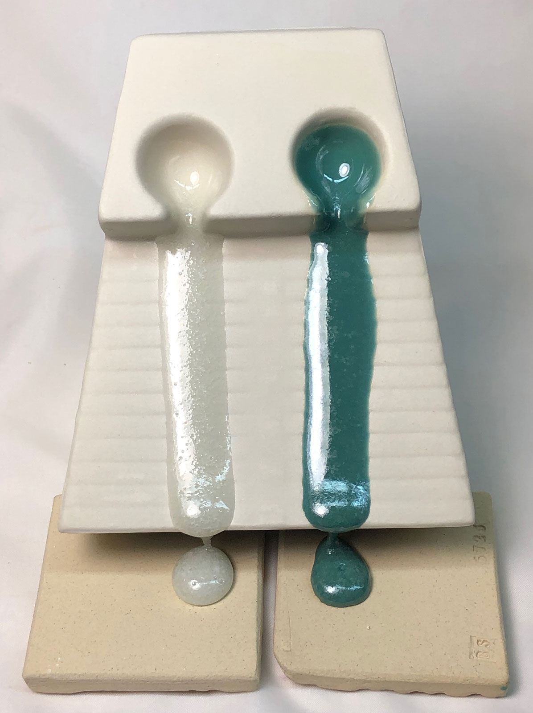
This picture has its own page with more detail, click here to see it.
These cone 6 glazes are the same (G3806G), except the one on the right has 3.5% copper carbonate added. Copper is commonly fluxes glazes, making them melt more. But in this case it is not, the clear base is running just as much as the stained one. Either the percentage is not high enough or the host transparent glaze is resistant. Another observation: I was suspicious that the micro-bubbles in the glass matrix were coming from the copper carbonate gassing during firing. But not so, as you can see on this melt fluidity tester, the flow on the left has many more (it appears less melted because of this). In this specific glaze it seems probable that the copper bubbles (generated as it decomposes) act as a fining agent to coagulate and help clear the others.
Melt fluidity and coverage:
RedArt Slip vs. Albany Slip vs. Alberta Slip
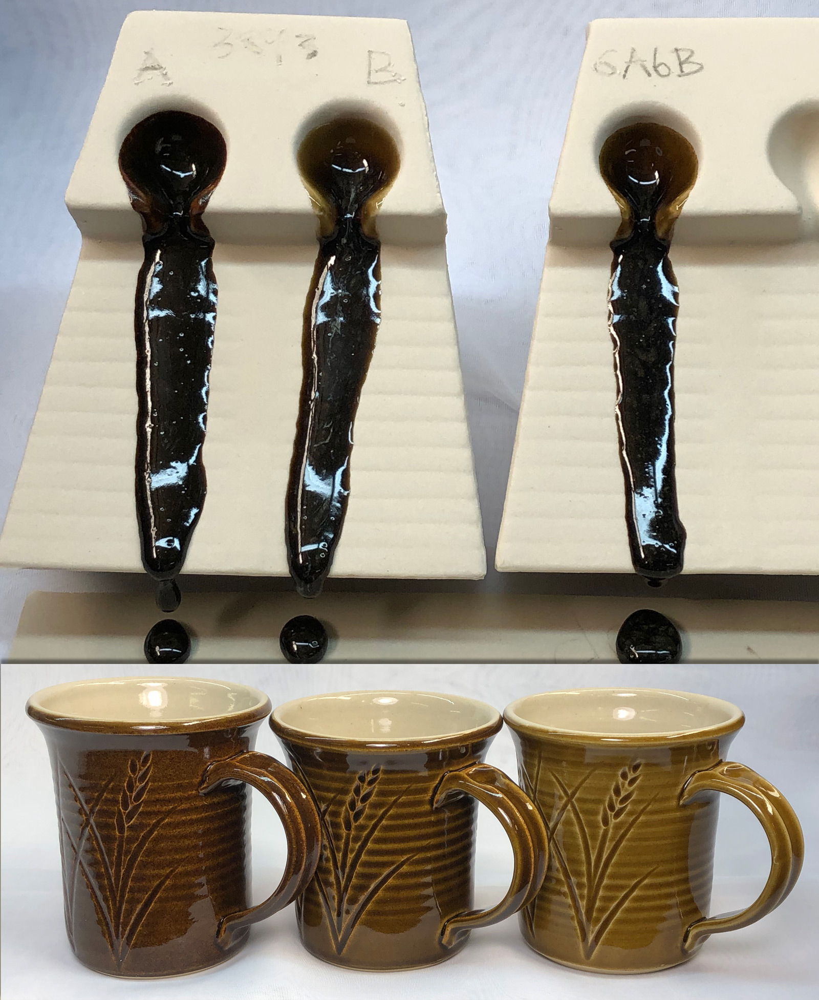
This picture has its own page with more detail, click here to see it.
These three melt flows and mugs were fired at cone 6 (using the C6DHSC firing schedule). The benchmark recipe is 80% clay and 20% Ferro Frit 3195 (the standard GA6-B recipe).
-The center melt flow (and matching buff stoneware mug below) employ the original Albany Slip.
-The one on the right employs Alberta Slip. Notice that, although having a very similar melt flow, it needs an iron oxide addition to darken the color (e.g. 2%).
-The one on the far left uses an Albany Slip substitute made from 80% Redart, 6.5% calcium carbonate, 6.5% dolomite and 6.5% nepheline syenite (code L3613D). The chemistry of RedArt is different enough from Albany that some compromises were needed to avoid over-supplying the iron even more (and firing darker yet). Although this Redart version runs in a very similar pattern on the melt flow, the character of the glaze on the mug reveals it needs a little more melting (increasing the frit percentage would take care of that).
Melt fluidity of Albany Slip vs. Alberta Slip at cone 10R

This picture has its own page with more detail, click here to see it.
This is a GLFL test, it employs a slipcast melt flow tester to show the flow patterns of two glazes (or materials), side-by-side. Albany Slip was a pure mined silty clay that, by itself, melted to a glossy dark brown glaze at cone 10R. By itself it was a Tenmoku glaze at high temperatures. Alberta Slip is a recipe of mined clays with added refined minerals that give it a similar chemistry, firing behavior and raw physical appearance. As you can see, the melt fluidity is very similar.
How does Gillespie Borate compare with the original Floating Blue recipe?

This picture has its own page with more detail, click here to see it.
The original Floating Blue recipe, our code number G2826R, has been popular for 50 years. But also troublesome (because of a fragile mechanism, poor slurry properties and inconsistencies in Gerstley Borate and rutile). Gillespie Borate, it's 2023 apparent successor, appears to solve most of its issues. These specimens of the recipe were fired using the cone 6 C6DHSC schedule. We have "vintage" Gerstley Borate from the 1990s, that is what was used here.
Top left: Floating Blue using Gerstley Borate (GB) (top) and Gillespie Borate bottom on a buff burning body.
Top right: Same but on a red burning body.
Centre: Melt fluidity GLFL test of the two glazes (GB) on the left.
Bottom: The two recipes and their calculated chemistries.
Clearly, the Floating Blue itself is firing greener than usual. And the Gillespie Borate version is much bluer. You may be used to something in between these two. The green tones could likely be restored by a reduction in the cobalt and increase in the iron oxide. The best news is that at 1.47 specific gravity, Gillespie Borate produces a far better slurry, there is no gelling. And no sign of settling into a hard layer.
The chemistry comparison at the bottom highlights some concerns, the difference is not insignificant. B2O3, Al2O3 and SiO2 are all lower (this could be part of the reason for the differences in color also). For better or worse, the melt fluidity is the same: Very high. This is likely because the percentage of Ulexite is higher (that melts better than Colemanite).
High B2O3 imparts better melt fluidity, but also fewer micro-bubbles
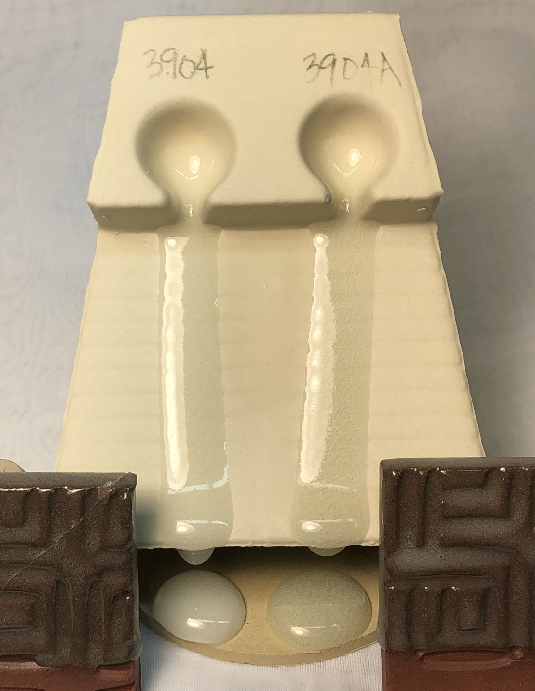
This picture has its own page with more detail, click here to see it.
A cone 6 firing. The glaze on the left has a B2O3 molar content of 0.54 whereas the one on the right has 0.64 (other oxide levels are the same). This is triple the typical amount of boron in a cone 6 glaze, the result is obvious: High melt fluidity for both. But G3904A has a significant difference: The flow is more transparent because of the lower micro-bubble population. It's melt better enables the bubbles to pass, exit and the surface to heal. Why don't all glazes use more boron? Cost. Frits are expensive and they are the best source of boron. There is also a cost to durability (although mitigated when there is plenty of Al2O3 and SiO2 present, as is the case here). These recipes were part of a project to fix a recipe where the potter mistakenly used Frit 3134 instead of 3124 when mixing a large batch of glaze. I calculated how much kaolin and silica to add to bring the chemistry back into line with the original. This was possible because frit 3134 chemistry is an approximate oxide-subset of 3124. The resultant glaze is potentially better than the original.
What Bismuth Subnitrate does between 1100-1250F
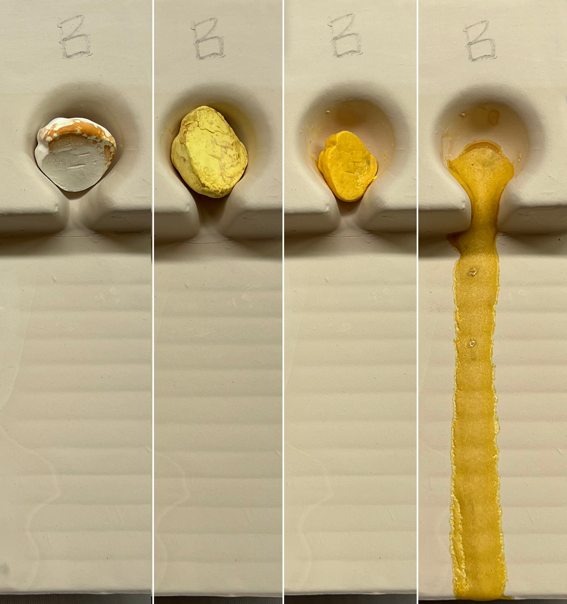
This picture has its own page with more detail, click here to see it.
I did this using our standard melt flow tester. I prepared 10-gram balls by mixing the bismuth subnitrate powder with 1% CMC gum (like what we do for the GBMF test). These balls were fired in an electric oxidation kiln to 1100F, 1200F, 1250F and 1300F (593-704C). It is not difficult to see why this is a potential ingredient in low-temperature frits. Does anyone know why it burns yellow? Does this turn transparent at higher temperatures?
Melt flow test demonstrates glaze:clay interaction
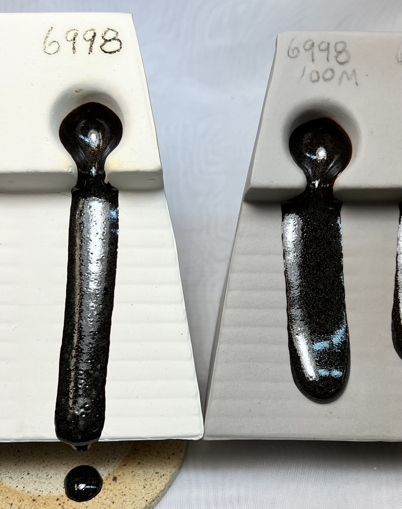
This picture has its own page with more detail, click here to see it.
The melts being compared here are our code number 6998, a production run of Alberta Slip. Both are the same sample batch and ball weight. These two flow testers were fired side by side in a cone 10R kiln. Why are the flows behaving so differently? It is the clay from which the flow testers were cast. The one on the left is made from L4404A, a highly refractory casting slip. The one on the right is M370, a medium-temperature porcelain (it survives pretty well to cone 10 but is obviously very vitreous). The difference in the flows (the width and length) is a product of the interaction with the material being tested and the tester itself. On the M370 tester the flow is adhering to the clay surface so well that it has spread and thinned enough so that few bubble-breaks are visible. This interaction has even slowed the flow. But the L4404A flow tester is clearly better, minimizing interaction and better revealing the fluidity of the melt.
Glaze bubbles behaving badly!
We see it in a melt fluidity test.
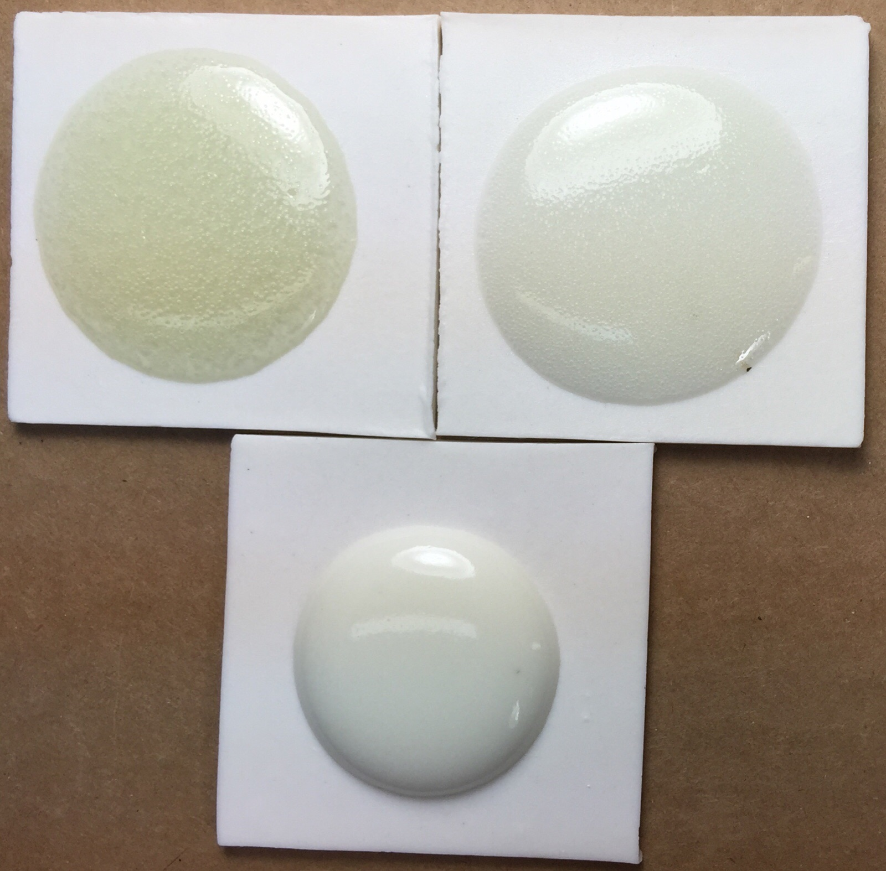
This picture has its own page with more detail, click here to see it.
These melted-down-ten-gram GBMF test balls of glaze demonstrate the different ways in which tiny bubbles disrupt transparent glazes. These bubbles are generated during firing as particles in the body and glaze decompose. This test is a good way to compare bubble sizes and populations, they are a product of melt viscosity and surface tension. The glaze on the top left is the clearest but has the largest bubbles, these are the type that are most likely to leave surface defects (you can see dimples). At the same time its lack of micro-bubbles will make it the most transparent in thinner layers. The one on the bottom right has so many tiny bubbles that it has turned white. Even though it is not flowing as much it will have less surface defects. The one on the top right has both large bubbles and tinier ones but no clouds of micro-bubbles.
These two transparent glazes are opposites:
In melt fluidity and surface tension

This picture has its own page with more detail, click here to see it.
This cone 04 flow tester compares two commercial low-fire transparent glazes. Their different chemistry strategies are revealed by the shape of these melt flows. While 3825B appears to have the higher melt fluidity, it also has much higher melt surface tension. This is evident in the narrow, rope-like stream and the way the flow meets the runway at a high angle before pulling into a rounded bead. A, by contrast, spreads and wets the runway, meandering downward in a broad, flat and relatively bubble-free river.
This difference is important in low-fire ware because these glazes must pass far more gases and bubbles than high-temperature glazes. The lower surface tension of A aids bubble release and healing after bubbles break. A is Amaco LG-10. B is Crysanthos SG213 (Spectrum 700 behaves similarly, although flowing less). Both approaches have advantages and disadvantages and are worth testing in your application.
Frit Melt Fluidity Comparison - 1800F
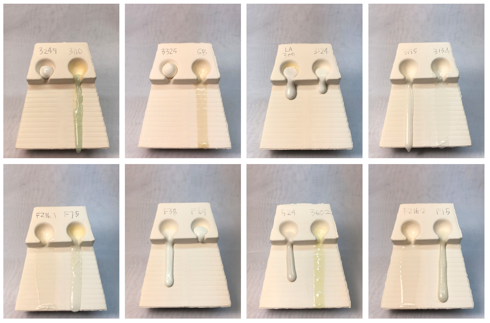
This picture has its own page with more detail, click here to see it.
Fired at 350F/hr to 1800F and held for 15 minutes (I already did firings from 1300F-1750F in 50 degree increments, all of them are visible in the parent project). Frit 3110, 3134, 3195, F75 have run all the way down. All of the frits have softened and melted slowly over a range of temperatures (hundreds of degrees). By contrast, Gerstley Borate, the only raw material here, suddenly melted and flowed right over the cliff (between 1600 and1650)! But not before Frit 3602 and FZ16 had done so earlier. Frit 3249 is just starting to soften but F69 (the Fusion Frits equivalent) is a little ahead of it. LA300 and Frit 3124 are starting also. F524, F38, F15 will all be over the end by the next firing. The melt surface tension is evident by the way in which the melts spread out or hold together.
Ferro Frit 3249 vs Fusion F-69 at cone 04
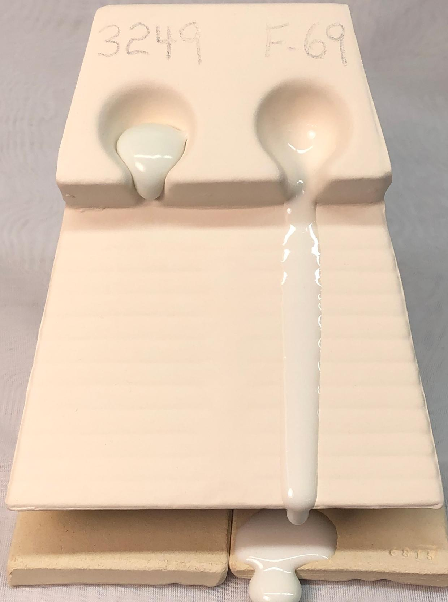
This picture has its own page with more detail, click here to see it.
The chemistry of these two supposedly interchangeable frits is very similar (the difference being that 3249 has 3% CaO that is missing in F-69). But that does not appear to account for this difference in melt fluidity at cone 04! However, as temperatures increase 3249 rapidly becomes more active. Inspite of the difference here we have found the two work interchangeablely in our G2934Y recipe. Obviously, the F-69 is going to make glazes melt better, at least at low fire.
Ferro Frit 3124 vs Fusion F621/19 at cone 04
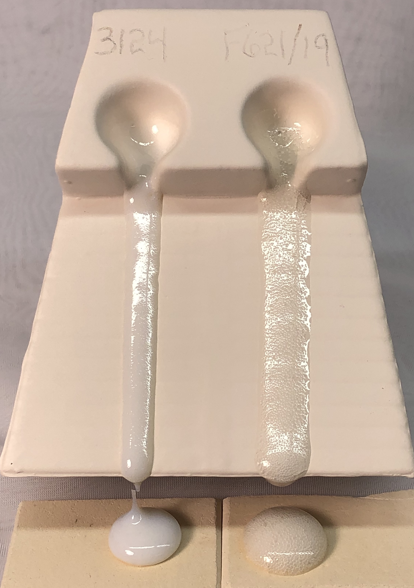
This picture has its own page with more detail, click here to see it.
Fusion Frit F621/19 is recommended as a substitute candidate for Ferro Frit 3124. However, as shown on this melt fluidity test of the two pure frit powders, it appears to have a lower surface tension and flow better. However the character of the flow is opposite to what is expected of a lower surface tension in the melt. There should either be a lower population of micro-bubbles or they should be smaller - but the opposite is the case. There should be fewer breaking at the surface and they should be healing better - but that is not the case. Frits are supposed to be free of carbon or hydrates - or are they? If the frit is sourcing gases because of raw materials not fully decomposing during smelting - how is that even possible? Do you know why this is happening, can you tell me please? Fusion Ceramics does not supply the chemistry of Frit F621/19 and it is not shown on their website in 2021, but I have no reason to believe it contains fluorine.
Melt fluidity tests as done by a frit manufacturer
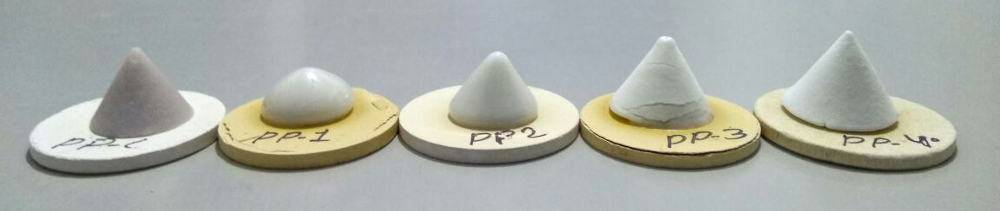
This picture has its own page with more detail, click here to see it.
The height down to which the cone melts is measured and recorded. Courtesy of Ashok Srivastava.
Inbound Photo Links
|
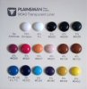 Stains having varying fluxing effects on a host glaze |
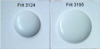 Melting range is mainly about boron content |
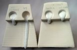 Melt fluidity: Cornwall Stone vs. Nepheline Syenite |
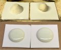 Will a cone or ball flow out better in a melt flow test? |
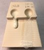 The first of 15 "Fool-Proof Recipes": Wrecked my kiln shelf! |
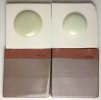 Glaze Melt Fluidity Not Evident on Typical Tests |
Links
| Glossary |
Viscosity
In ceramic slurries (especially casting slips, but also glazes) the degree of fluidity of the suspension is important to its performance. |
| Glossary |
Surface Tension
In ceramics, surface tension is discussed in two contexts: The glaze melt and the glaze suspension. In both, the quality of the glaze surface is impacted. |
| Glossary |
Melting Temperature
The melting temperature of ceramic glazes is a product of many complex factors. The manner of melting can be a slow softening or a sudden liquifying. |
| Glossary |
Fluid Melt Glazes
Fluid melt glazes and over-melting, over fired, to the point that they run down off ware. This feature enables the development of super-floss and cyrstallization. |
| Glossary |
Reactive Glazes
In ceramics, reactive glazes have variegated surfaces that are a product of more melt fluidity and the presence of opacifiers, crystallizers and phase changers. |
| Projects |
Temperatures
|
| Tests |
Frit Softening Point
In ceramics, this is the temperature at which a glaze or glass begins to flow, ceasing to exhibit the properties of a solid. |
| Tests |
Glaze Melt Fluidity - Ball Test
A test where a 10-gram ball of dried glaze is fired on a porcelain tile to study its melt flow, surface character, bubble retention and surface tension. |
| Tests |
Glaze Melt Flow - Runway Test
A method of comparing the melt fluidity of two ceramic materials or glazes by racing them down an inclined runway. |
| Articles |
A Low Cost Tester of Glaze Melt Fluidity
Use this novel device to compare the melt fluidity of glazes and materials. Simple physical observations of the results provide a better understanding of the fired properties of your glaze (and problems you did not see before). |
| Troubles |
Glaze Blisters
Questions and suggestions to help you reason out the real cause of ceramic glaze blistering and bubbling problems and work out a solution |
 PayPal | No tracking, No ads, No paywall, No transient content! Just organized, concise information constantly updated and improved. Was this helpful? Consider supporting me. |
| By Tony Hansen Follow me on        |  |
Got a Question?
Buy me a coffee and we can talk 

https://digitalfire.com, All Rights Reserved
Privacy Policy